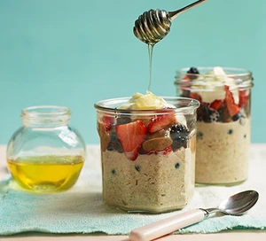

Overnight Oats

Description
Porridge but made overnight instead of the morning!
Ingredients
- ground cinnamon
- porridge oats
- yoghurt
- mixed berries
- honey
- nut butter
Steps
- night before, stir the cinnamon and water and milk into your oats
- the next day, loosen by adding more water. Then top with yoghurt, berries,
and some honey.